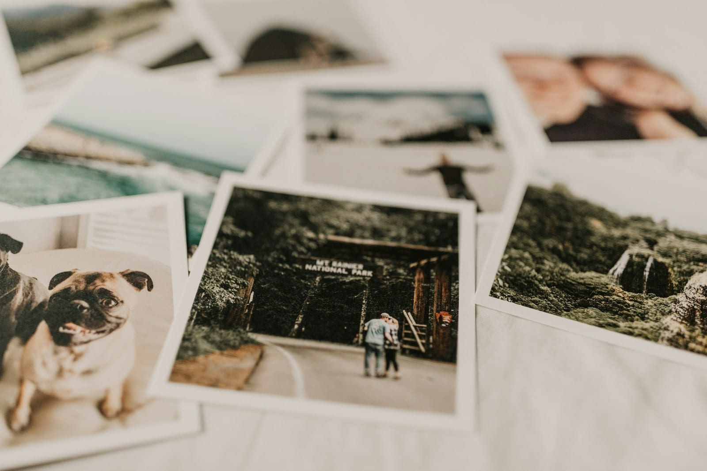

RESEARCH
Why does music bring back memories?
Let’s look at what studies have found about how strongly songs bring back memories, which songs do it most and couples’ own songs, and how you can use all of it at an anniversary or milestone party.

- In a 2021 study of 657 British adults, memories brought back by music were relived more strongly and felt more personally important than memories brought back by TV shows.
- The songs that bring back the most memories are usually from a person's teens, peaking around age 14 in a 2020 study.
- Nostalgic songs feel good to most people, though in a 2024 study, people who tend toward sadness felt worse with them.
A song comes on, and suddenly you’re back in the car you drove in high school, or in a kitchen from years ago, before you’ve even tried to remember any of it. At a party, one song can do that for a whole table at once.
Why do songs bring back memories? #
Music seems to be unusually good at bringing memories back. In a 2021 study of 657 adults chosen to represent the British population, memories brought back by music were relived more strongly than memories brought back by TV shows. They also felt more personally important, and they involved other people more. That was true even when the songs and the shows were equally familiar.
In a 2016 lab study at the University of Iowa, people heard 30 songs and saw 30 photographs of famous faces, and they described what each one brought to mind. The memories that came back with a song had more detail of a particular time and place than the ones that came back with a face. It was a small lab study.
These memories turn up in everyday life, too. In another 2021 study, 31 people kept a diary for a week. They wrote down about one memory a day that music brought back, usually while they were doing something routine, and the memories came on their own. The older people in the study described more vivid and more positive memories. Only 31 people took part, though.
If you’d like to dig in, here’s a longer read on the ways music makes you feel something, and memory is one of them.
Why do old songs make you nostalgic? #
A lot of the memories that old songs bring back come with a feeling of nostalgia. In a 2007 study, college students heard chart songs from their childhood and teens, and about 30% of the songs brought back a memory. The feelings that came with those memories were mostly positive, and nostalgia was one of the most common.
In a 2020 study of 470 people aged 18 to 82, the songs that brought back the most memories were from people’s teens, peaking around age 14. Learn more about the years each generation remembers best.
For most people, a nostalgic song is a happy thing to hear. In a 2024 study of 582 American adults, the songs people chose as nostalgic felt more positive and more energizing than songs that were only familiar. People in the study who tend toward sadness felt worse with them, though.
Do couples really have 'our song'? #
A lot of couples do, going by one survey. In 2020, researchers in Australia surveyed 200 people in relationships. It was common for a couple to have a song they called theirs, and they usually picked it up early in the relationship. The song brought back particular memories and good feelings. Since it was a survey, there’s no way to tell whether the song does anything for the relationship itself.
Which songs should you ask for at an anniversary party? #
For an anniversary party, a milestone birthday, a retirement or a reunion, the songs to ask for are the ones tied to the guest of honor’s own memories, or the couple’s song if they have one. After that, the years when they were young are a good place to start the song list.
Our musicians can usually learn a song they don’t already play, so just let us know what you’d like to hear.
Sources
- Jakubowski, K., Belfi, A. M., and Eerola, T. (2021). Phenomenological differences in music- and television-evoked autobiographical memories. Music Perception. Read the source
- Belfi, A. M., Karlan, B., and Tranel, D. (2016). Music evokes vivid autobiographical memories. Memory. Read the source
- Jakubowski, K., and Ghosh, A. (2021). Music-evoked autobiographical memories in everyday life. Psychology of Music. Read the source
- Janata, P., Tomic, S. T., and Rakowski, S. K. (2007). Characterisation of music-evoked autobiographical memories. Memory. Read the source
- Jakubowski, K., Eerola, T., Tillmann, B., Perrin, F., and Heine, L. (2020). A cross-sectional study of reminiscence bumps for music-related memories in adulthood. Music & Science. Read the source
- Hennessy, S., Greer, T., Narayanan, S., and Habibi, A. (2024). Unique affective profile of music-evoked nostalgia: an extension and conceptual replication of Barrett et al.'s (2010) study. Emotion. Read the source
- Harris, C. B., Baird, A., Harris, S. A., and Thompson, W. F. (2020). "They're playing our song": couple-defining songs in intimate relationships. Journal of Social and Personal Relationships. Read the source